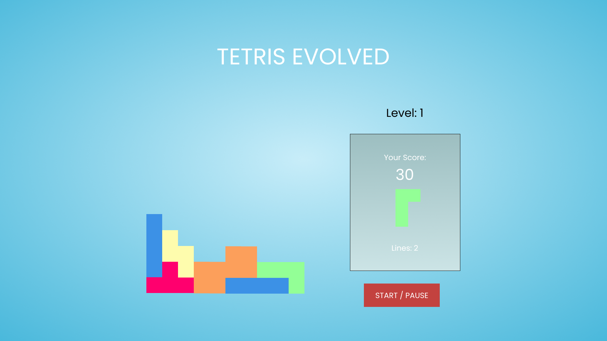

My Portfolio
Check out my recent work.

Delilah's Dagger Original Design
This project is where I really got the grips of Javscript which it helped my progression massively. It uses a parralax effect, aswell as jquery for a link scrolling animation. It was a much bigger project than anything else I had tackled before, and the experience was invaluable.
.png)
A freelance project designing a dynamic and responsive website for a tattoo and piercing company. The client required a dynamic gallery to showcase their work, aswell as portfolio pages for each artist. This project was designed and built from scratch using HTML, CSS, and Javascript.
.png)
A fun project creating a super dynamic and interactive website showcasing 3 different portfolios. This project is focused on using Javascript to create a pleasant user experience that is interactive and looks great.
 1 (1).png)
My first design made with Wordpress. Simone wanted to update her site used to advertise her meditation and minfulness podcast, as-well-as showcase her fabulous products and blog articles. It's still a work in progress but has really helped me get to grips with using wordpress

I was super excited to make this classic game from my childhood, it was a really fun way to practice my javascript skills. You use the arrow keys to control the tetromino, so unfortunately it doesn't work on mobile.

A React App that fetches "Todo's" from an API, and allows the user to add thier own "Todo's" to the list, aswell as being able to "Mark as complete", and delete from the list aswell.
A simple, fun game made using vanilla Javascript, mainly utilizing conditional statements along side basic HTML and CSS.